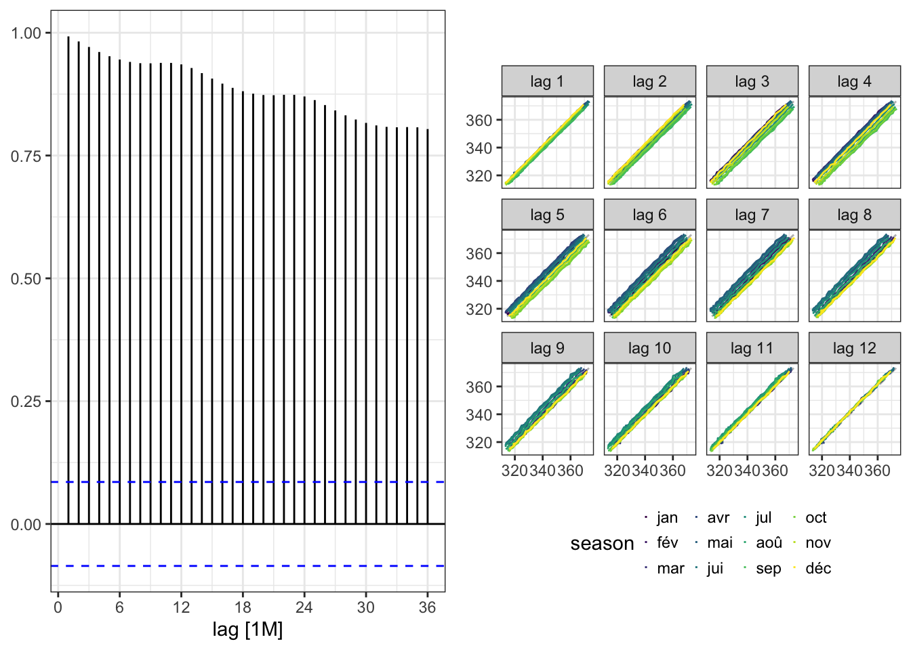
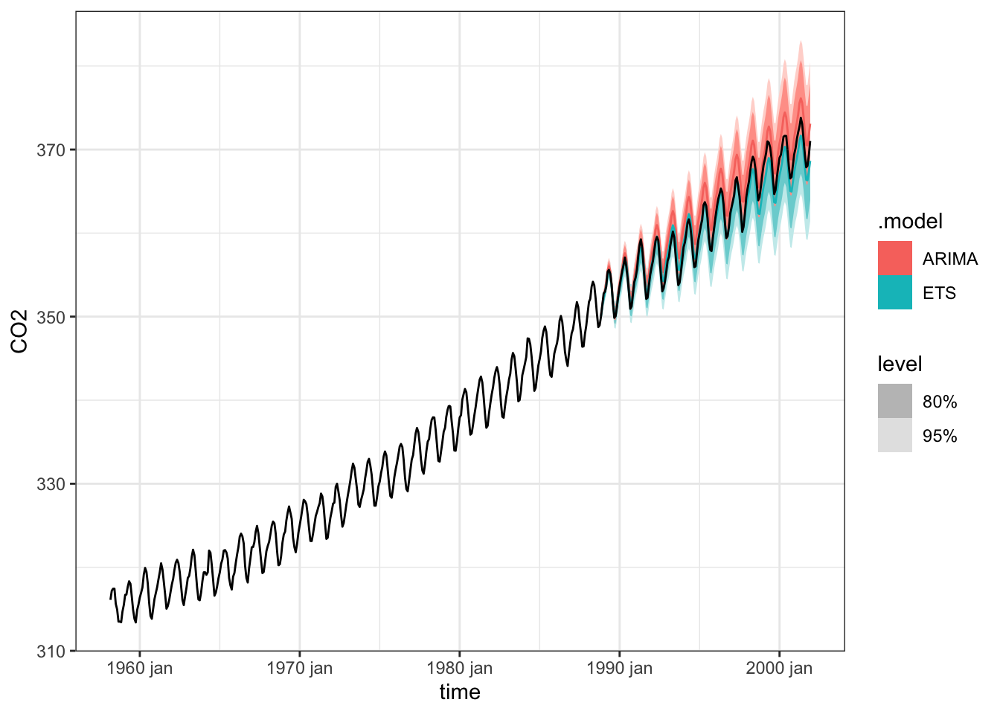

library("tidyverse")
library("fpp3")
library("cowplot")
library("plotly")
library(dplyr)
library(ggplot2)
library(lubridate)
library(timetk)
# Setup for the plotly charts (# FALSE returns ggplots)
interactive <- FALSE
theme_set(theme_bw())Devoir 5
Prétraitement des données
hawai <- read_csv("data/hawai.csv")
#Modification des données de temps
hawai <- hawai |>
mutate(time = (datetime = date_decimal(time))) #date_decimal pour convertir en temps et datetime pour le format
hawai <- hawai |>
mutate(year = year(time),
month = month(time),
day = day(time)) |> # création de colonnes pour chaque composante
mutate(month = if_else(day == 31, month + 1, month)) |> # si le jour est 31 change le mois pour le suivant
mutate(year = if_else(day == 31 & month == 12, year + 1, year)) |> # si le jour est 31 change le mois pour le suivant, et si décembre, change l'année aussi
mutate(time = yearmonth(make_date(year, month))) |>
select(time, CO2)
#peut-être une façon plus simple qui existe, mais je ne veux pas risquer qu'un mois de décembre ne se transforme pas en la prochaine année. #création pour voir si les données sont bien transformées
hawai_test <- hawai |>
mutate(year = year(time),
month = month(time),
day = day(time)) |>
select(-c(time, CO2)) |>
count(year) |>
filter(n < 12)
#seulement un année sort, 1958, car le jeu de donnée commmence en mars!Dans ce travail, un jeu de données fourni est analysé afin de voir l’évolution des concentrations au fil du temps. Des modèles de prédiction de la concentration en dioxyde de carbone sont utilisés pour prédire les concentrations futures. Ce jeu de données contient des données allant de 1958 à 2001.
hawai_time <- hawai |>
tsibble() #une table sous format tsibble, qui est indexer par la colonne "time"Using `time` as index variable.hawai_time |>
plot_time_series(as_date(time), CO2)# Graphique interactif du package plotly, qui met la variable en fonction du temps, ainsi que la tendance en bleuAnalyse de la série temporelle
Visuelle
Pour débuter, une analyse visuelle de la série temporelle peut aider à détecter divers comportements des données. À la Figure 1, il est possible de remarquer une tendance à la hausse dans nos données. La concentration en dioxyde de carbone augmente pendant la période de temps, allant de 1958 à 2001. C’est une tendance à la hausse. La ligne bleue représente les fluctuations dans le temps.
Il semble aussi avoir des variations saisonnières, ce qui est visible par les fluctuations annuelles qui sont présentes à la Figure 1.
Sys.setlocale("LC_ALL", "fr_CA") #mettre les mois en français[1] "fr_CA/fr_CA/fr_CA/C/fr_CA/en_US.UTF-8"hawai_time |>
gg_season(CO2, polar = TRUE) +
labs(
x= "Temps",
y = "Moyenne de la concentration en CO2"
)La ?@fig-season_fluctuation permet de voir plusieurs choses. Il est possible de voir qu’avec les années, que les valeurs ne semblent pas revenir à des valeurs plus faibles. La tendance est à la hausse.
La lecture de la ?@fig-season_fluctuation peut être difficile. Voici un graphique qui représente les années, terminant par 0 et par 5 comprises en 1958 et 2001, pour faciliter la lecture:
hawai_time |>
mutate(year = year(time),
month = month(time, label = TRUE)) |>
filter(year %% 10 == 5 | year %% 10 == 0) |> #conserver seulement les années terminant par 5 et 0, grace au modulo qui donne le reste de l'année divisé par 10
ggplot(aes(x = month, y = CO2, group = year, color = year)) +
geom_line() +
scale_colour_gradientn(colours = rainbow(5))+ #changer les couleurs
labs(x = "Mois", y = "Concentration en dioxyde de carbone", color = "Année")Des fluctuations saisonnières sont aussi apparentes, la concentration en dioxyde de carbone est plus forte au mois de mai comme il est possible de voir à la Figure 2 et à la Figure 3. C’est aussi logique, car à ce moment de l’année, les plantes effectuent moins de photosynthèse durant les périodes hivernales, ce qui cause une augmentation du CO2. La concentration en dioxyde de carbone atteint des valeurs plus faibles au mois d’octobre. Il ne semble pas y avoir de fluctuation cyclique présente dans les variations de la concentration en dioxyde de carbone dans les données étudiées.
Un autre type de graphique nous permet de bien visualiser le tout, et de tirer les mêmes conclusions:
hawai_time |>
gg_subseries()Plot variable not specified, automatically selected `y = CO2`plot_grid(ACF(hawai_time, y = CO2, lag_max = 36) |> autoplot()+labs(y = NULL),
gg_lag(hawai_time, y = CO2, lags = c(1:12))+ labs(x = NULL, y = NULL)+ theme(legend.position = "bottom", legend.key.size = unit(0.5, "mm"))) # changer la position de la légende et la mettre plus petite

À la Figure 5, il est possible de voir un graphique d’autocorrélation. Dans ce graphique, il est possible de déduire plusieurs comportements de la série temporelle. Premièrement, les valeurs sont situées largement au-dessus des seuils de significativité. Les fluctuations ne sont donc probablement pas associées à un bruit blanc. Deuxièmement, il est possible de distinguer que les données proches, les unes des autres dans le temps, possèdent des concentrations en dioxyde de carbone assez similaire. Ceci est exprimé par des valeurs fortes et positives pour des retards de courte période. Ce type de schéma est caractéristique des données qui présentent une tendance. Il est aussi possible de voir une saisonnalité, ce qui est visible par l’augmentation de l’autocorrélation à des retards multiples d’environ 12. Lorsque les deux effets se combinent, il est possible de voir une diminution lente de l’autocorrélation avec une augmentation des retards, causés par la tendenace, et une forme scalloped (ou festonnée en français) due à la saisonnalité. (tiré de Forecasting: Principles and Practice (3rd ed))
Le graphique de retardement montre une tendance force, ce qui est visible via la dispersion des points très près de la diagonale. Par exemple, il est possible de voir qu’à un retard de 12 que les lignes sont quasi superposées à la diagonale. Ceci est explicable par le fait que la donnée actuelle est comparée à la valeur de l’année précédente, et comme la tendance est à la hausse tranquillement. Les données se ressemblent relatives d’année en année. Les retards situés entre les valeurs de 1 et 12 présentent des lignes qui sont un peu plus éloignées de la diagonale, surtout pour les retards 5,6 et 7. Ceci permet de voir une certaine saisonnalité, les valeurs séparées par 6 mois d’intervalle sont moins proches que les valeurs séparées par 12 mois d’intervalle. ## Analyse numérique
lag_value <- round(nrow(hawai)/5)
ljung_test<-hawai_time |>
features(CO2, ljung_box, lag = lag_value) |>
rename(statistique = lb_stat, "p-value" = lb_pvalue) #faire un tableau plus joli
knitr::kable(ljung_test, align = "c")| statistique | p-value |
|---|---|
| 31180.85 | 0 |
Pour le test de Ljung, il faut utiliser un retard inférieur aux nombres d’observations (T), divisés par 5, ou le nombre de cycles, s’il est inférieur à T/5. Dans notre cas, le nombre de cycles est supérieur à T/5, donc il faut utiliser T/5. L’hypothèse nulle de ce test qu’il n’y a pas d’autocorrélation des erreurs de 1 à r. Dans le cas présent, de 1 à 105.
Comme il était visible à la Figure 5, et confirmé par la très faible valeur p, qui est de 0, du test de Ljung, les données sont différentes d’un bruit blanc.
hawai_time |>
plot_acf_diagnostics(time, CO2)Modélisation
Séparation des données
Pour débuter, il faut séparer les données en un ensemble d’entrainement du modèle, et un ensemble pour les tests. Dans le cas échéant, les données sont reparties en ensemble d’entrainement représentant 70% des données et en ensemble de tests représentant 30% des données.
data <- as.integer(nrow(hawai_time)*0.7) # nombre de donnée pour avoir 70%
hawai_time_train <- hawai_time |>
slice(1:data) # conserve les données de 1 à data
hawai_time_test <- hawai_time |>
slice((data+1):nrow(hawai_time)) # conserve les données de data+1 à la finComme je ne suis pas un expert en modélisation de série temporelle, ou simplement en modélisation, il me semble risqué de faire un choix de modèle pour effectuer les prédictions. Je vais donc en utiliser deux, puis les comparer, pour ensuite faire mes prédictions. Les méthodes (AutoRegressive Integrated Moving Average) et SES (Simple Exponential Smoothing) seront utilisées. Comme le jeu de données n’est pas significativement gros et par manque d’expérience des méthodes automatisées seront utilisées. L’automatisation, des méthodes ARIMA et SES, permet de réduire les erreurs, mais au désavantage de ne pas garantir d’avoir les modèles les plus optimaux.
SES
Pour la méthode SES, la fonction ETS permet de sélectionner le meilleur modèle SES en minimisant le AICc. L’AICc permet de sélectionner le modèle qui explique l’adéquation des données (dans le cas présent des concentrations de CO2), en minimisant le nombre de paramètres utilisés pour construire le modèle. Cette mesure permet de comparer la précision du modèle, en pénalisant l’ajout de variables.
projected <- nrow(hawai_time_test)
CO2_model <- hawai_time_train |>
model(ETS = ETS(CO2),
ARIMA = ARIMA(CO2, stepwise = FALSE, approximation = FALSE
)) #création des modèles
#CO2_model_ses <- hawai_time_train |>
#model(ETS(CO2))
CO2_model |>
select(ETS) |> report()Series: CO2
Model: ETS(A,A,A)
Smoothing parameters:
alpha = 0.6802687
beta = 0.00225957
gamma = 0.0001015036
Initial states:
l[0] b[0] s[0] s[-1] s[-2] s[-3] s[-4]
314.5366 0.112694 0.5563618 -0.08727554 -0.9497972 -2.004136 -3.056502
s[-5] s[-6] s[-7] s[-8] s[-9] s[-10] s[-11]
-2.878968 -1.183077 0.78395 2.259468 2.856629 2.384125 1.319221
sigma^2: 0.114
AIC AICc BIC
1392.687 1394.436 1459.125 #report(CO2_model_ses)Analyse du modèle
Le modèle choisit est ETS(A,A,A), ce qui signifie que le type d’erreur, la tendance et la saisonnalité dont de type additif. Le type d’erreur additive signifie que les erreurs sont indépendantes de la temporalité. C’est aussi sans surprise que la tendance change de manière linéaire, ce qui est visible préalablement. De plus, la saisonnalité des données était aussi préalablement observée.
Il est possible de suivre l’évolution des différentes composantes du modèle à travers le temps:
CO2_model |>
select(ETS) |>
components() |>
autoplot()Warning: Removed 12 rows containing missing values or values outside the scale range
(`geom_line()`).Le premier graphe en haut présent sur les valeurs observées, le deuxième présente l’estimation de la tendance, le troisième présente les changements de la tendance au fil du temps, le quatrième présente une estimation de la saisonnalité et le cinquième présente ce qui ne peut pas être expliqué par le modèle.
Le modèle prédit une tendance à la hausse. La ligne est plutôt plate avec quelques petites variations. La barre grise dans le graphique level de très petite dimension indique que la tendance influence grandement le modèle prédit.
De plus, la composante slope permet d’expliquer une infime partie de la variabilité des données. Comme les valeurs (axe est situé entre 0.095 et 0.115) sont relativement petites, le changement s’effectue sur une longue période de temps, à petite échelle. La saisonnalité est bien présente,elle explique une partie de la tendance générale des données. La saisonnalité est bien conservée au fil du temps, ce qui est visible par les changements quasi inexistants dans le graphique season. L’erreur est assez faible, comme le graphique remainder nos la montre. L’échelle est petite comparativement à nos données originales, ce qui montre une erreur assez faible relativement à nos données.
Il est possible de créer une projection de nos données pour voir comment le modèle prédit les données dans le temps:
CO2_ses_fc <- CO2_model|>
select(ETS) |>
forecast(h = projected)
CO2_ses_fc |>
autoplot(hawai_time, fill = "blue")La ligne en bleu est assez similaire à la ligne en noir, qui représente les données réelles. Les données réelles sont situées dans l’intervalle de confiance de 80%. Le modèle semble faire une prédiction efficace, des analyses statistiques peuvent le confirmer:
knitr::kable(accuracy(CO2_ses_fc, hawai_time) |>
select(-c(.model, .type, ME, RMSSE, ACF1)), align = "c")| RMSE | MAE | MPE | MAPE | MASE |
|---|---|---|---|---|
| 1.149941 | 0.8916896 | 0.0984476 | 0.2447281 | 0.7299939 |
Débutons par décrire les colonnes du tableau qui seront abordé:
RMSE: Erreur quadratique moyenne:La racine carrée de la moyenne des erreurs quadratiques des données projetées. MAE: Erreur moyenne absolue, calcule de la différence moyenne des valeurs prédites et les données originales MAPE: Erreur absolue moyenne en Pourcentage, le pourcentage d’erreur absolu en moyenne pour chaque période de temps moins les valeurs réelles divisées par les valeurs réelles. MASE: Comparaison de l’erreur absolue moyenne de la prévision à l’erreur absolue moyenne d’une prévision naïve Dans tous les cas, des valeurs plus faibles sont souhaitables. L’objectif est de minimiser les erreurs, et donc des modèles plus exacts.
Les données pour le modèle SES sont relativement faibles. L’erreur quadratique est la valeur la plus forte, ce qui signifie que les erreurs sont distribuées dans les valeurs prédites. La valeur de MASE est assez loin de 0, donc un modèle naïf (prédiction seulement avec la donnée précédente) n’aurait pas pu faire une prédiction des valeurs similaire à notre modèle. Notre modèle est en mesure de capter une structure dans les données.
Un diagnostic visuel des résidus peut aussi être effectué:
CO2_model |>
select(ETS) |>
gg_tsresiduals()Dans le graphique Innovation residuals, il est possible de voir que les résidus semblent bien distribués autour de l’axe 0. Il ne semble pas non plus avoir de structure présente dans les résidus, du pas visible à l’œil. Il y a toutefois la présence de quelques pics dans les résidus, ce qui ne devrait pas arriver.
Le graphique acf à la Figure 8, permet de voir que la majorité des résidus forment un bruit blanc, car les valeurs sont majoritairement situées entre les intervalles de confiance. Toutefois, une valeur à 3 de retard dépasse l’intervalle de confiance, ce qui pourrait indiquer la présence d’une structure qui reviendrait à chaque 3 mois. Pour confirmer le tout, un test de ljung pourrait aider:
knitr::kable(CO2_model |>
select(ETS) |>
augment() |>
features(.innov, ljung_box, lag = lag_value))| .model | lb_stat | lb_pvalue |
|---|---|---|
| ETS | 135.4854 | 0.0241981 |
Comme la p-value associée à ce test est inférieur au seuil de significativité de 0.05, il est peu probable que les résidus forment un bruit blanc. Les résidus contiennent de l’autocorrélation, il ne faudrait donc pas nécessairement utiliser ce modèle pour faire des prédictions ou du moins ajuster notre analyse des résultats effectuée.
Pour la distribution des résidus, elle semble plutôt normale avec une forme de cloche, peut-être un peu skew vers la gauche. Il semble aussi avoir des valeurs aberrantes de part et d’autre de la moyenne. Un test de chaperon peut aider à conclure sur la normalité de la distribution des résidus:
aug <- CO2_model |>
select(ETS) |> augment()
shapiro_result <- shapiro.test(aug$.innov)
shapiro_result<-tibble(Test = "Shapiro",
Statistique = shapiro_result$statistic,
"P-value" = shapiro_result$p.value)
knitr::kable(shapiro_result)| Test | Statistique | P-value |
|---|---|---|
| Shapiro | 0.9699086 | 7e-07 |
En effet, la p-value très faible indique que les résidus ne semblent pas normalement distribués. Encore une fois, si le modèle est utilisé pour faire des prédictions, il faut faire attention aux intervalles prévisionnels.
ARIMA
Tout comme la fonction ETS, la fonction arima permet de trouver un modèle en choisissant automatiquement les paramètres p, d et q, et P,D,Q dans le cas échéant contenant de la saisonnalité . L’automatisation permet de trouver un modèle en minimisant les erreurs.
#CO2_model_arima <- hawai_time_train |> model(ARIMA(CO2,
#stepwise = FALSE, approximation = FALSE))
CO2_arima_fc <- CO2_model |>
select(ARIMA) |>
forecast(h = projected, stepwise = FALSE, approximation = FALSE)CO2_model |>
select(ARIMA) |>
report()Series: CO2
Model: ARIMA(0,1,3)(2,1,1)[12]
Coefficients:
ma1 ma2 ma3 sar1 sar2 sma1
-0.3577 -0.0459 -0.1800 -0.0291 -0.1571 -0.7912
s.e. 0.0543 0.0541 0.0549 0.0705 0.0652 0.0529
sigma^2 estimated as 0.1132: log likelihood=-115.9
AIC=245.79 AICc=246.11 BIC=272.89Analyse du modèle
Le modèle choisit ARIMA(1,1,1)(2,1,2)[12] informe sur plusieurs composantes du modèle:
ARIMA: le modèle utilisé
(1,1,1): C’est la composante p,d,q du modèle, soit les paramètres non saisonnais
p(AR), le nombre de composants autorégressif (c’est à dire à quelle point la valeur dépend dépend des valeurs précédantes), ou 1 indique une relation linéaire avec la valeur précédente
d(I), le degré de différenciation, ou 1 indique que la série temporelle à du être différencié une fois pour être stationnaire
q(MA), l’ordre de la moyenne mobile, ou 1 indique qu’il existe une relation linéaire entre la valeur actuelle et l’erreur de la valeur précédente.
(2,1,2): C’est la composante saisonnière du modèle, donc P,D,Q (donc les mêmes définitions que précédemment, mais avec la saisonnalité)
P = 2, il y a deux termes autorégressifs dans le modèle saisonnier, donc il y a une dépendance linéaire avec les deux termes précédant dans le modèle. Dans notre cas, comme le temps est de 12 mois, ceci veut dire que la valeur actuel va dépendre des mêmes valeurs des 2 années précedantes. Par exemple si, la valeur actuelle est décembre 2001, les termes autorégressifs seront décembre 2000, et décembre 1999, comme le cycle est de 12.
D = 1, indique que la série temporelle saisonnière à du être différencié une fois pour être stationnaire
Q = 2, la valeur actuellement prédite, dépend de deux termes d’erreurs à la même période des deux précédentes.
[12], indique en combien de temps la saisonnalité revient
Des prédictions peuvent être effectuées avec ce modèle:
CO2_arima_fc|> autoplot(hawai_time, fill = "blue") Il est possible de voir que les prédictions semblent assez proches de la réalité, mais légèrement supérieures aux données réelles. Les intervalles de confiances semblent assez petits, ce qui est bon signe, et les valeurs réelles se trouvent dans l’intervalle de 80%.
L’analyse des résidus est nécessaire pour l’utilisation du modèle en toute confiance.
knitr::kable(
CO2_model |>
select(ARIMA) |>
accuracy() |>
select(-c(.model, .type, ME, RMSSE, ACF1)), align = "c")| RMSE | MAE | MPE | MAPE | MASE |
|---|---|---|---|---|
| 0.3276703 | 0.2503681 | 0.0096708 | 0.0759665 | 0.2049673 |
CO2_model |>
select(ARIMA) |>
gg_tsresiduals()Dans le graphique Innovation residuals, il est possible de voir que les résidus semblent bien distribués autour de l’axe 0. Il ne semble pas non plus avoir de structure présente dans les résidus, du moins pas visible à l’œil nu. Il y a toutefois la présence de quelques pics dans les résidus, ce qui est non négligeable.
Le graphique acf à la Figure 8, permet de voir que la majorité des résidus forment un bruit blanc, car les valeurs sont situées entre les intervalles de confiance. Toutefois, une valeur à 18 de retard dépasse légèrement l’intervalle de confiance, ce qui pourrait indiquer la présence d’une structure qui reviendrait à chaque 18 mois. Pour confirmer que les résidus forment un bruit blanc, un test de ljung pourrait aider:
knitr::kable(CO2_model |>
select(ARIMA) |>
augment() |>
features(.innov, ljung_box, lag = lag_value))| .model | lb_stat | lb_pvalue |
|---|---|---|
| ARIMA | 76.30427 | 0.9841864 |
La p-value proche de 1 signifie qu’il y a très peu d’autocorrélation entre les résidus. Le rejet de l’hypothèse nulle signifie que les résidus forment probablement un bruit blanc, ce qui est bon augure dans notre cas.
Les résidus semblent aussi normalement distribués. Il y a peut-être des valeurs extrêmes qui influencent la distribution, mais ça semble négligeable. Encore une fois, un test de shapiro peut aider à conclure sur la normalité de la distribution des résidus:
aug <- CO2_model |>
select(ARIMA) |> augment()
shapiro_result <- shapiro.test(aug$.innov)
shapiro_result<-tibble(Test = "Shapiro",
Statistique = shapiro_result$statistic,
"P-value" = shapiro_result$p.value)
knitr::kable(shapiro_result)| Test | Statistique | P-value |
|---|---|---|
| Shapiro | 0.988283 | 0.0046727 |
Le test de shapiro indique une p-value inférieur au seuil de significativité de 0.05. Les valeurs ne sont pas normalement distribuées, donc l’utilisation du modèle doit se faire avec précaution, mais il peut être probablement être utilisé due à la robustesse du test de shapiro, qui ne laisse pas place à l’erreur…
Bref, les deux modèles utilisés peuvent être utilisés pour faire des prédictions, tout en faisant attention aux intervalles de prédiction. Est-ce que les modèles peuvent être améliorés? Certainement! Je crois que l’ajout d’autre variable pourrait peut-être améliorer le soleil. Par exemple, peut-être que la quantité de soleil reçu dans les derniers jours influence le taux de photosynthèse des plantes, et donc la captation de CO2. La température pourrait être utilisée pour la modélisation.
Comparaison des modèles
Visuelle
Ce qui peut être intéressant, comparer les différents modèles pour voir comment ils se comparent les uns aux autres.
CO2_model |>
forecast(h = projected) |>
autoplot(hawai_time)

Par la comparaison graphique, il semble que les modèles prédissent bien les données. Les lignes de prédiction des valeurs sont proches de celle des valeurs réelles, les modèles semblent capturer la structure des données. Les valeurs des intervalles de prédiction sont similaires, mais celle de l’ARIMA est un peu plus forte lorsque l’on regarde les valeurs de l’écart-type des deux prédictions à la fin. La valeur pour le modèle SES est de 14 et celle de 15, donc les valeurs de l’ARIMA sont plus dispersé autour de la moyenne. Le modèle ARIMA est peut-être plus robuste dans ces prédictions, ce qui entraine une augmentation de l’écart-type. Toutefois, il faut faire attention, car les intervalles de prédiction du modèle SES étaient loin de satisfaire les conditions de normalité et d’autocorrélation comparativement au modèle ARIMA. En regardant les prédictions effectuées, il est possible de dire que les valeurs prédites par le modèle ETS semblent plus similaires aux valeurs évaluées.
En regardant, les Figure 8 et Figure 10, il est possible de voir dans les graphiques d’autocorrélation que le modèle ARIMA capte plus la structure des données. En effet, les résidus du modèle ARIMA semblent être un bruit blanc, comparativement au modèle SES. ## Numérique Des comparaisons numériques peuvent aussi être effectuées.
knitr::kable(
bind_rows(
CO2_model |>
select(ARIMA) |>
accuracy(),
CO2_model |> select(ARIMA) |> forecast(h = projected) |> accuracy(hawai_time),
CO2_model |>
select(ETS) |>
accuracy(),
CO2_model |> select(ETS) |> forecast(h = projected) |> accuracy(hawai_time)
) |>
select(-ME, -MPE, -ACF1)) | .model | .type | RMSE | MAE | MAPE | MASE | RMSSE |
|---|---|---|---|---|---|---|
| ARIMA | Training | 0.3276703 | 0.2503681 | 0.0759665 | 0.2049673 | 0.2383626 |
| ARIMA | Test | 2.0498433 | 1.8489914 | 0.5103341 | 1.5137021 | 1.4911515 |
| ETS | Training | 0.3302190 | 0.2482782 | 0.0754725 | 0.2032564 | 0.2402167 |
| ETS | Test | 1.1499412 | 0.8916896 | 0.2447281 | 0.7299939 | 0.8365207 |
L’objectif pour un modèle est d’avoir des valeurs les plus faibles possibles. Dans notre cas, en comparant les données de types tests, le modèle ETS serait plus favorable à utiliser, car il présente des valeurs plus de bases. Toutefois, ce modèle brise aussi les conditions de normalité et d’autocorrélation des résidus, donc pour avoir plus de points statistiques, je crois que le modèle avec ARIMA pourrait être utilisé pour prédire les valeurs de la concentration en dioxyde de carbone.
Projection dans le futur
L’utilité de la modélisation pourrait d’être de prédire les prochaines années d’évolution de la concentration en dioxyde de carbone avec notre modèle ARIMA:
CO2_model |>
select(ARIMA) |>
forecast(h = 276) |>
autoplot(hawai_time)+
labs(x= "Temps (année)", y= "Concentration en dioxyde de carbone")